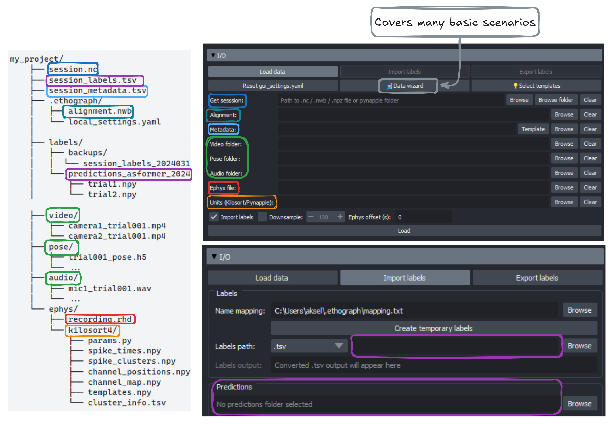

User Manual#
ethograph visualizes behavioural recordings across modalities:
Data |
Shown as |
File formats / loaders |
|---|---|---|
Video |
pygfx viewer (via pynaviz) |
|
Pose/ BoundingBox |
Overlay on video |
|
Audio |
Waveform + spectrogram |
|
Electrophysiology |
Multi-channel trace |
|
Spike-sorted units |
Raster / PSTH |
Kilosort folder, |
Features |
Line plots / heatmaps |
Kinematics, firing rates, latent variables, model outputs, etc. |
Feature data can be loaded via three backends:
Backend |
Object |
File format |
|---|---|---|
xarray |
|
|
Pynapple |
|
|
NWB |
|
|
Unlike a plain numpy array, all three formats carry explicit timestamps with each value.
This allows ethograph to automatically align data of different sampling rates and
modalities (video, audio & electrophysiology).
Labelling#
Ethograph is a labelling GUI for marking the onset and offset of behavioural events. Press a number key to select a label class, click on the timeseries plot to mark the onset, click again to mark the offset, then press V to play back the segment you just labelled.

The labels documentation includes more info on how to:
label in the GUI
define new label categories (
mapping.txt)deal with labels overlapping in time (label branches)
import labels from other formats (Pynapple, NWB, BORIS, audacity, Raven, …)
export labels
Importing data#
The I/O section (see image below) offers a lot of flexibility, but may be overly complex for your data. As a first starting point, have a look at the Getting Started Wizard. In many cases, the Data wizard can guide you through the steps to organize & temporally align your different data/media streams. For more complex scenarios, you may have to write a custom Python script.
{kind=link}

Feature dropdowns#
To showcase some ethograph functionalities, we will use pose data from a carrion crow performing a tool-use task (Moll et al., 2025¹). The xarray.Dataset is from one behavioural trial, and shows position, velocity, speed, and acceleration for 3 keypoints tracked in 3D.
import ethograph as eto
ds = eto.sample_data()
ds[["position", "velocity", "speed"]]
<xarray.Dataset> Size: 206kB
Dimensions: (time: 1169, space: 3, keypoints: 3, individuals: 1)
Coordinates:
* time (time) float64 9kB 0.0 0.005 0.01 0.015 ... 5.83 5.835 5.84
* space (space) <U1 12B 'x' 'y' 'z'
* keypoints (keypoints) <U8 96B 'beakTip' 'stickTip' 'pellet'
* individuals (individuals) <U5 20B 'Crow1'
Data variables:
position (time, space, keypoints, individuals) float64 84kB ...
velocity (time, space, keypoints, individuals) float64 84kB ...
speed (time, keypoints, individuals) float64 28kB ...
Attributes:
source_software: DeepLabCut
ds_type: poses
fps: 200.0
time_unit: seconds
source_file: C:/Users/aksel/Documents/Code/EthoGraph/data/Moll2025/2...
trial: 115
bird: Crow1
session_date: 2024-12-17
pellet_position: left
human_verified: 1Notice the dimensions:
Feature |
Dimensions |
|---|---|
|
|
|
|
|
|
With xarray.DataArray, you can use sel() to pick
a specific keypoint, spatial axis, and individual:
# Standard xarray .sel — works when all dimensions exist
beak_x = ds["position"].sel(keypoint="beakTip", space="x", individual="Crow1")
print(f"position with .sel: shape {beak_x.shape}")
# But speed has no 'space' dimension — .sel raises an error:
try:
ds["speed"].sel(keypoint="beakTip", space="x", individual="Crow1")
except (KeyError, ValueError) as e:
print(f"speed with .sel: {type(e).__name__}: {e}")
In the GUI, you can switch between features using the Feature dropdown and select (sel()) a unique combination of feature dimensions. In the video below, the user switches from the feature speed to velocity, with the selection dimensions individual=crow1, keypoint=beakTip and space=["x", "y", "z"] (All checkbox ticked). Thanks to sel_valid(), any invalid dimensions are ignored (e.g. it’s not problematic that speed does not have a space dimension).
At the end of the video and in the plot below, one can see that particularly velocity for keypoint=beakTip and space=z (green line) defines segmentation boundaries of the crows downward movement, inserting the stick tool into the dispenser.
Changepoints#
Besides looking at the z-velocity, one can also identify good candidates for segmentation boundaries by looking at where there are minima or turning points in the beakTip speed curve. We call these kinematic changepoints.
Data requirements summary#
xarray |
Pynapple |
NWB |
|
|---|---|---|---|
File format |
|
|
|
Required attrs |
|
(none) |
(NWB standard) |
Features |
Any |
|
|
Individuals |
|
Separate objects |
One subject per file |
Trials |
One |
|
See Data Format Requirements for full specifications across all three backends.
Operations across backends#
Operation |
xarray / TrialTree |
Pynapple |
NWB |
|---|---|---|---|
Load |
|||
Restrict |
Via |
||
Select dims |
Column indexing on |
Via |
|
Build |
|
||
Alignment |
|
|
In source |
Iterate trials |
Via |
References#
Moll, F. W., Würzler, J., & Nieder, A. (2025). Learned precision tool use in carrion crows. Current Biology, 35(19), 4845-4852.e3. https://doi.org/10.1016/j.cub.2025.08.033